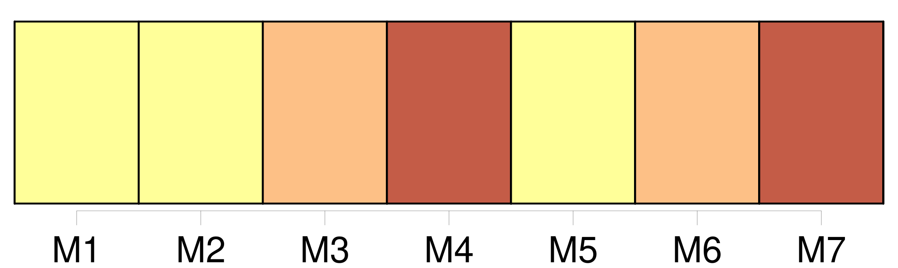
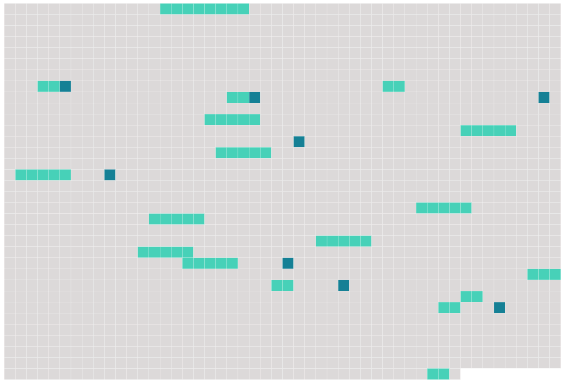

Longueur nb maillons : 26 mentions |
  |
S'il y a nécessité de pourvoir à l'administration de tout ou partie [des biens laissés par une personne présumée absente] , et qui n'a point de procureur fondé, il y sera statué par le tribunal de première instance, sur la demande des parties intéressées. [18 phrases]
Section Ire [1 phrases]
Dans les cas où l'absent n'aurait point laissé de procuration pour l'administration de [ses biens] , ses héritiers présomptifs au jour de sa disparition ou de ses dernières nouvelles, pourront, en vertu du jugement définitif qui aura déclaré l'absence, se faire envoyer en possession provisoire [des biens] [qui] appartenaient à l'absent au jour de son départ ou de ses dernières nouvelles, à la charge de donner caution pour la sûreté de [leur] administration. [3 phrases]
Il en sera de même si la procuration vient à cesser ; et, dans ce cas, il sera pourvu à l'administration [des biens de l'absent] , comme il est dit au chapitre Ier du présent titre. [1 phrases]
Lorsque les héritiers présomptifs auront obtenu l'envoi en possession provisoire, le testament, s'il en existe un, sera ouvert à la réquisition des parties intéressées, ou du commissaire du Gouvernement près le tribunal ; et les légataires, les donataires, ainsi que tous ceux qui avaient sur [les biens de l'absent] , des droits subordonnés à la condition de son décès, pourront les exercer provisoirement, à la charge de donner caution. [1 phrases] L'époux commun en [biens] , s'il opte pour la continuation de la communauté, pourra empêcher l'envoi provisoire et l'exercice provisoire de tous les droits subordonnés à la condition du décès de l'absent, et prendre ou conserver par préférence l'administration [des biens de l'absent] [3 phrases]
La possession provisoire ne sera qu'un dépôt, qui donnera à ceux qui l'obtiendront l'administration [des biens de l'absent] , et qui [les] rendra comptables envers lui, en cas qu'il reparaisse ou qu'on ait de ses nouvelles. [5 phrases]
Son rapport sera homologué en présence du commissaire du Gouvernement ; les frais en seront pris sur [les biens de l'absent] [1 phrases]
Ceux qui par suite de l'envoi provisoire, ou de l'administration légale, auront joui [des biens de l'absent] , ne seront tenus de lui rendre que le cinquième des revenus, s'il reparaît avant quinze ans révolus depuis le jour de sa disparition ; et le dixième, s'il ne reparaît qu'après les quinze ans. [4 phrases]
Si l'absence a continué pendant trente ans depuis l'envoi provisoire, ou depuis l'époque à laquelle l'époux commun aura pris l'administration [des biens de l'absent] , ou s'il s'est écoulé cent ans révolus depuis la naissance de l'absent, les cautions seront déchargées ; tous les ayant-droit pourront demander le partage [des biens de l'absent] , et faire prononcer l'envoi en possession définitif par le tribunal de première instance. [1 phrases]
La succession de l'absent sera ouverte du jour de son décès prouvé, au profit des héritiers les plus proches à cette époque ; et ceux qui auraient joui [des biens de l'absent] , seront tenus de [les] restituer, sous la réserve des fruits par eux acquis en vertu de l'article 127. [1 phrases]
Si l'absent reparaît ; ou si son existence est prouvée pendant l'envoi provisoire, les effets du jugement qui aura déclaré l'absence, cesseront ; sans préjudice, s'il y a lieu, des mesures conservatoires prescrites au chapitre Ier du présent titre, pour l'administration [de ses biens] [1 phrases]
Si l'absent reparaît, ou si son existence est prouvée, même après l'envoi définitif, il recouvrera [ses biens] dans l'état où [ils] se trouveront, le prix de ceux qui auraient été aliénés, ou les biens provenant de l'emploi qui aurait été fait du prix de ses biens vendus. [1 phrases]
Les enfans et descendans directs de l'absent pourront également, dans les trente ans, à compter de l'envoi définitif, demander la restitution de [ses biens] , comme il est dit en l'article précédent. [1 phrases]
Après le jugement de déclaration d'absence, toute personne qui aurait des droits à exercer contre l'absent, ne pourra les poursuivre que contre ceux qui auront été envoyés en possession [des biens] , ou qui [en] auront l'administration légale. [15 phrases]
Si l'époux absent n'a point laissé de parens habiles à lui succéder, l'autre époux pourra demander l'envoi en possession provisoire [des biens] |
 |
La ressource peut être téléchargée sur la page Ortolang
Si vous avez des questions ou vous voyez des erreurs, merci d'envoyer un mail à silvia.federzoni89@gmail.com
Site développé par S. Federzoni (contact)